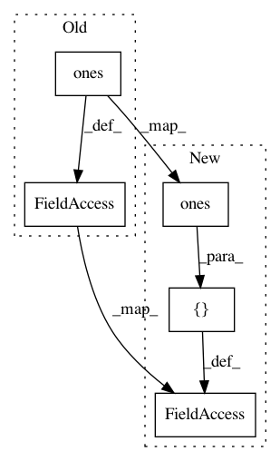

d663fda862df1c831e7f93f1e3feb2e189a1b9ef,keras/layers/convolutional_recurrent.py,ConvLSTM2D,build,#ConvLSTM2D#Any#,329
Before Change
constraint=self.bias_constraint)
if self.unit_forget_bias:
self.bias += K.concatenate(K.zeros((self.filters,)),
K.ones((self.filters,)),
K.zeros((self.filters * 2,)))
else:
self.bias = None
self.kernel_i = self.kernel[:, :, :, :self.units]
self.recurrent_kernel_i = self.recurrent_kernel[:, :, :, :self.units]
self.kernel_f = self.kernel[:, :, :, self.units: self.units * 2]
self.recurrent_kernel_f = self.recurrent_kernel[:, :, :, self.units: self.units * 2]
self.kernel_c = self.kernel[:, :, :, self.units * 2: self.units * 3]
self.recurrent_kernel_c = self.recurrent_kernel[:, :, :, self.units * 2: self.units * 3]
self.kernel_o = self.kernel[:, :, :, self.units * 3:]
self.recurrent_kernel_o = self.recurrent_kernel[:, :, :, self.units * 3:]
if self.use_bias:
self.bias_i = self.bias[:self.units]
self.bias_f = self.bias[self.units: self.units * 2]
self.bias_c = self.bias[self.units * 2: self.units * 3]
self.bias_o = self.bias[self.units * 3:]
else:
After Change
regularizer=self.bias_regularizer,
constraint=self.bias_constraint)
if self.unit_forget_bias:
self.bias += K.concatenate([K.zeros((self.filters,)),
K.ones((self.filters,)),
K.zeros((self.filters * 2,))])
else:
self.bias = None
self.kernel_i = self.kernel[:, :, :, :self.filters]
self.recurrent_kernel_i = self.recurrent_kernel[:, :, :, :self.filters]
self.kernel_f = self.kernel[:, :, :, self.filters: self.filters * 2]
self.recurrent_kernel_f = self.recurrent_kernel[:, :, :, self.filters: self.filters * 2]
self.kernel_c = self.kernel[:, :, :, self.filters * 2: self.filters * 3]
self.recurrent_kernel_c = self.recurrent_kernel[:, :, :, self.filters * 2: self.filters * 3]
self.kernel_o = self.kernel[:, :, :, self.filters * 3:]
self.recurrent_kernel_o = self.recurrent_kernel[:, :, :, self.filters * 3:]
if self.use_bias:
self.bias_i = self.bias[:self.filters]
self.bias_f = self.bias[self.filters: self.filters * 2]
self.bias_c = self.bias[self.filters * 2: self.filters * 3]
self.bias_o = self.bias[self.filters * 3:]
else:
In pattern: SUPERPATTERN
Frequency: 3
Non-data size: 5
Instances
Project Name: keras-team/keras
Commit Name: d663fda862df1c831e7f93f1e3feb2e189a1b9ef
Time: 2017-02-16
Author: francois.chollet@gmail.com
File Name: keras/layers/convolutional_recurrent.py
Class Name: ConvLSTM2D
Method Name: build
Project Name: NifTK/NiftyNet
Commit Name: f4ed926c2a8a7f0fc30c171d83907134dafd54eb
Time: 2018-07-21
Author: wenqi.li@ucl.ac.uk
File Name: niftynet/layer/crf.py
Class Name: CRFAsRNNLayer
Method Name: layer_op
Project Name: NifTK/NiftyNet
Commit Name: a8812b2034cfa8517c5b4911aa4333f0e34a8b6f
Time: 2018-01-09
Author: rmaplue@ucl.ac.uk
File Name: niftynet/network/dense_vnet.py
Class Name: Affine3DAugmentationLayer
Method Name: random_transform